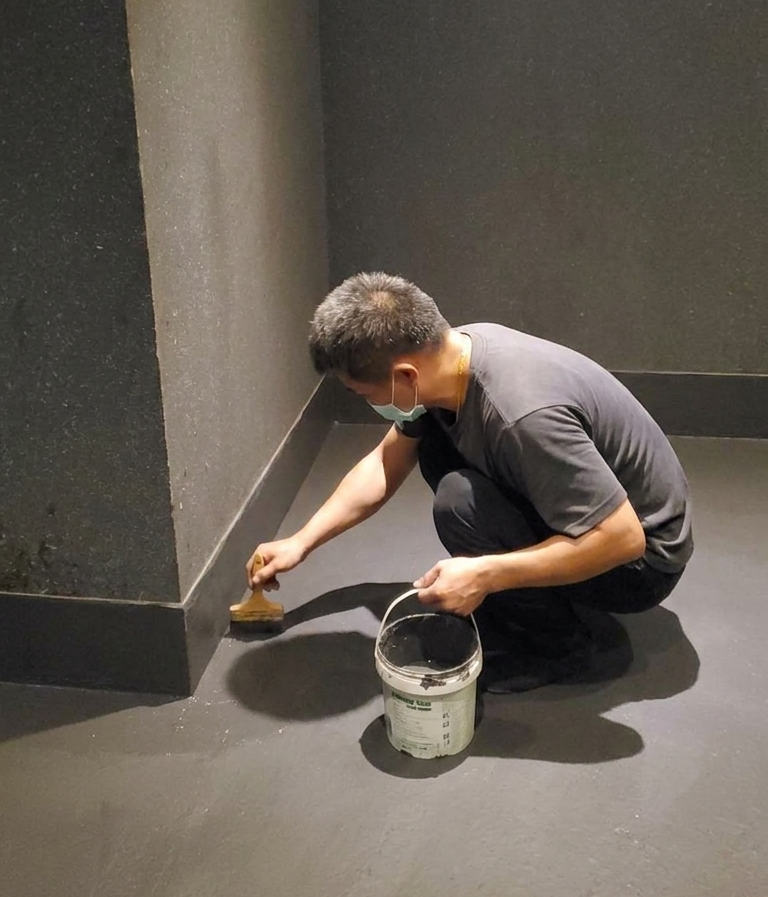

成功處理案例
3次維修失敗

管理處投訴半年

2年反覆漏水

打針無效

一般師傅只做表面修補，我們透過熱成像找出結構性源頭，徹底根治。
樓下投訴搞到壓力大？我們直接提供專業檢測報告，協助您與鄰居、管理處協調。
滲漏位置飄忽？我們配備精密測濕儀與煙霧測試，不靠經驗「靠估」。
永盛工程行不是一般的裝修公司。我們專攻「疑難雜症」，過去處理過數千宗其他師傅修不好的個案。

儀器診斷源頭
透明價格無隱藏
專業技工按圖施工
提供長達10年保修